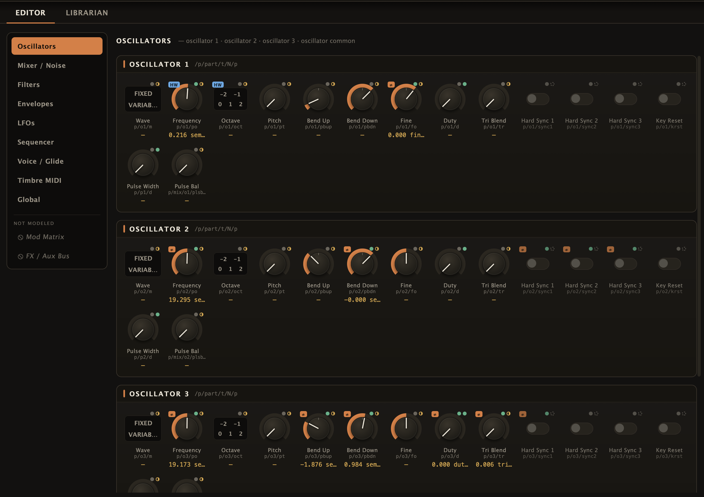

Editor and librarian
A desktop application that edits the instrument's patch parameters over the same binary parameter plane the built-in UI uses. In progress; not yet released.

What it does
- Full parameter surface. 265 parameters per timbre across oscillators, mixer and noise, filters, envelopes, LFOs, sequencer, voice and glide, timbre MIDI and global settings. The mod matrix and effects are not modelled yet.
- Three timbres. The Synth 1/2/3 tabs rebind the whole surface; a parameter's wire id is its base id plus a fixed per-timbre offset.
- Arm gate. Nothing reaches the instrument until the session is connected and armed. Disarmed edits stay in the local patch document.
- Batched push. "Push all dirty" and "Push whole patch" pack records into blobs no larger than the instrument's own frontend sends.
- Readback that never writes back. Changes made on the instrument's panel are observed and adopted into the editor without being echoed to the instrument.
- Compound controls. Where the panel sends two parameters together, the editor does the same: choosing an LFO's pulse wave co-sends its pulse-width in one message, only on the actual change, so a value you set by hand is not overwritten.
- Librarian. Capture a preset as it loads on the instrument, save it to a file, diff two patches.
Reading a control
Each control carries two small markers showing how much is known about it:
| Marker | Meaning |
|---|---|
| Tier dot | How well the parameter's id and value mapping are established: value-proven (solid), order-proven (half), order-only (hollow). |
| Provenance dot | Where the displayed value came from: unknown, the panel, a preset, sent by the editor, or confirmed by readback. |
HW badge | The id has been verified on hardware. |
| Dirty marker | The local value differs from what the instrument is believed to hold. |
The kind of control follows the parameter's type: continuous values get a knob (cutoffs get a full-width slider), small enumerations get segmented buttons, booleans get a toggle. A continuous parameter whose range is not yet known is shown read-only and cannot be sent.
How it reaches the instrument
flowchart LR ED["Editor
desktop"] subgraph BOX["Instrument"] RL["Relay
whitelist + tap"] VC["Voice controller
UDP 7770"] FE["Built-in frontend"] end ED -->|"/x ,b records over LAN"| RL RL -->|"validated records"| VC FE -->|"/x ,b records"| VC RL -.->|"mirrored frames"| ED FE -.->|"sniffed"| RL
The relay runs from temporary storage and installs nothing. It can be restricted to datagrams from one configured source address.
State
| Area | State |
|---|---|
| Parameter model, record encoding | DONE tested against captured traffic |
| Editable surface, arm gate, batched push | DONE against a mock voice controller |
| Compound controls, companion co-send | DONE both edges (choosing the pulse wave and leaving it) byte-identical to the panel's own capture on hardware |
| All wire types on real hardware | DONE continuous, enumerated and boolean records, per-timbre, verified on the instrument |
| Readback, librarian round-trip | DONE panel edits adopted without write-back; a preset load captured and decoded to full coverage |
| Safe automation rate | DONE burst limit characterised on hardware; default held at 50 Hz |
| Mod matrix, effects | NOT MODELLED |